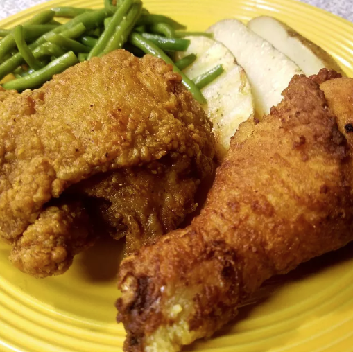

Crispy Fried Chicken Recipe

What Makes This Fried Chicken So Crispy?
I experimented with lots of recipes over the years to find the best crispy fried chicken. This is it! It's bits and pieces of hints I have heard over the years. It's more a matter of preparation and cooking method!
This is the only crispy fried chicken recipe you'll ever need. Why? It combines all the tried-and-true tricks to ensure the juiciest, most flavorful, crispiest chicken every time.
Crispy Fried Chicken Ingredients
- Chicken
- Buttermilk
- Flour
- Seasonings
- Oil
How to Make Crispy Fried Chicken
- Combine the flour, paprika, salt, and pepper in a zip-top bag. Seal the bag and shake until well-combined.
- Pour buttermilk into a shallow bowl, then dip the chicken (on both sides) until it's completely soaked in buttermilk. Place the soaked chicken in the bag with flour mixture, seal, and shake well to coat. Transfer the coated chicken to a baking sheet, and cover. Allow the flour coating to become a paste-like consistency.
- Pour the oil in a skillet and bring it to high heat. Brown the chicken on both sides, then reduce the heat, cover the skillet, and cook for about 30 minutes. Remove the cover, return the heat to high, and fry until extra crispy. Drain the chicken on paper towels.